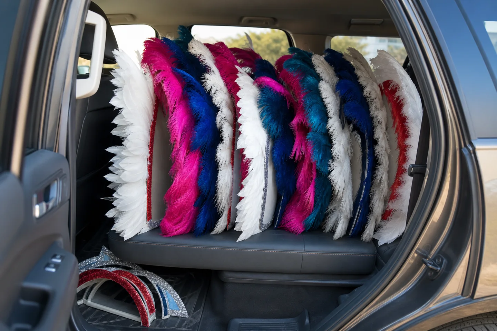
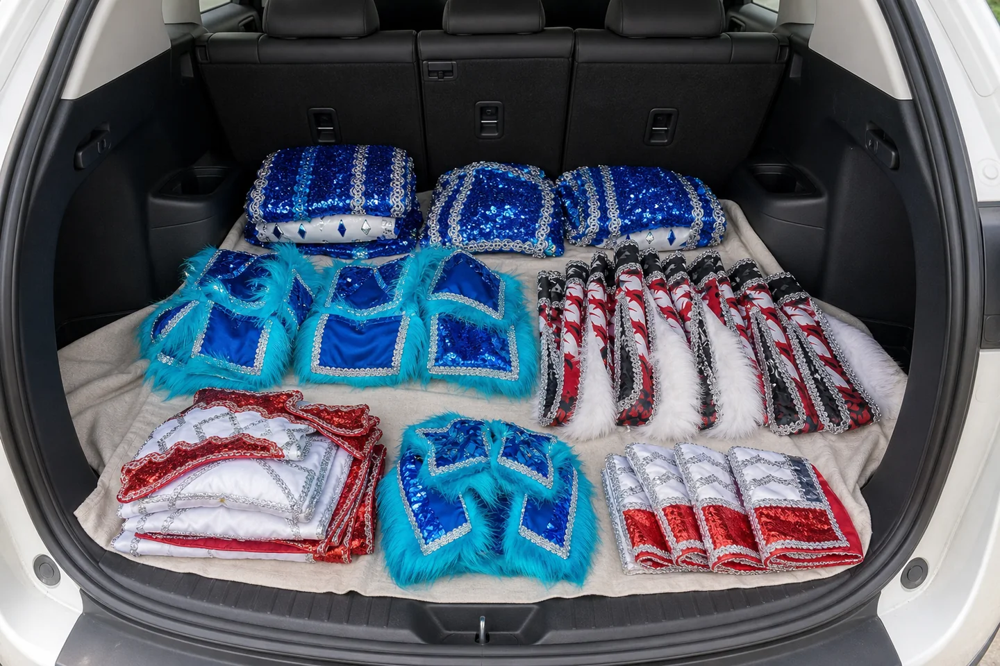
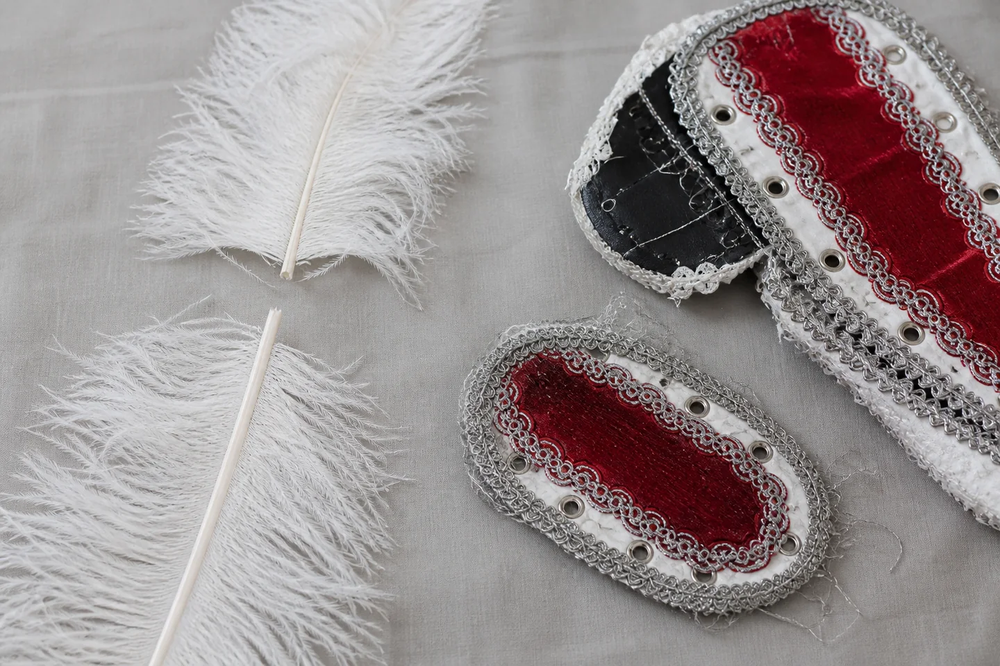

Estas reglas protegen a tu curso y a los demás colegios que usan los trajes el mismo día. Si todo está claro, la coordinación fluye.
10 acuerdos esenciales
Condiciones y Reglamento de Arriendo
Haz clic en cada acuerdo para desplegar el detalle completo sin necesidad de avanzar slider por slider.
01 · Precio y Garantía Representativa ($10.000)
El arriendo cuesta $35.000 por traje de 8 piezas completas. La garantía es de $10.000 por traje como depósito simbólico para facilitar el arriendo del curso y no retener grandes montos de fianza a los apoderados.
Si ocurre un daño o pérdida, no se salda con los $10.000: se evalúa y cubre según la tabla oficial de valorización por pieza. Si todo vuelve a tiempo y completo, tu garantía retorna al 100% íntegra a tu cuenta.
Regla clave: Los $10.000 son un depósito representativo, no un tope de daños.
02 · Reserva y Bloqueo de Fecha ($27.500 para reservar)
Para agendar la fecha se paga el 50% del arriendo ($17.500) + la garantía completa ($10.000), dando un total de $27.500 por alumno.
El saldo restante de $17.500 se transfiere hasta 24 horas antes del retiro. Sin reserva pagada no hay trajes asegurados en el calendario de septiembre.
Importante: La cotización inicial no bloquea el cupo hasta confirmar la reserva.
03 · Set de Tallaje de Prueba (3 días)
Entregamos un set de muestras para que los alumnos prueben tallas en su colegio antes de la entrega final. El set se devuelve en 3 días.
Puedes combinar tallas de arriba y abajo libremente. El traje definitivo y limpio de taller se entrega cerca de la presentación escolar.
04 · Transporte Obligatorio en Auto Cerrado
El retiro y devolución son responsabilidad del colegio o apoderado designado. Se requiere vehículo cerrado amplio (auto, SUV o familiar).
Los penachos viajan en una sola fila a lo largo del asiento trasero, de perfil y apoyados en la base. Prohibidas camionetas abiertas o apilar peso sobre las plumas.
05 · Horarios de Retiro y Devolución
El vestuario se retira con un mínimo de 3 horas de antelación al evento (o la noche previa entre 18:00 y 22:30 según coordinación) para llegar tranquilos a la mañana escolar.
La devolución se realiza estrictamente dentro de las 3 horas posteriores al término del baile del curso.
06 · Tolerancia y Multas por Atraso
Existe una tolerancia de 10 minutos en el horario acordado de devolución. De 11 a 25 min de retraso se descuenta el 30% de la garantía; de 26 a 45 min el 80%; y más de 45 min la garantía completa.
07 · Uso del Vestuario y Cuidado de Penachos
El traje está confeccionado para adaptarse con cordón tripolino macramé y ojalillos. Que quede un espacio abierto de 5 a 10 cm en la espalda es normal y el penacho la cubre.
Los niños deben colocarse los penachos recién en el último minuto antes de salir a bailar. Cuidado especial en fotos grupales para no aplastar ni quebrar plumas.
08 · Suspensión por Lluvia o Fuerza Mayor
Si la presentación escolar se suspende por lluvia o fuerza mayor y no es posible reprogramar fecha, se devuelve el 70% del arriendo y la garantía completa al 100%.
09 · Reunión Presencial de Confianza con Loreto
La reunión presencial en taller sirve para conocernos: tú compruebas la calidad e higiene del vestuario y Loreto conoce al apoderado o profesor responsable. Si no pudiste imprimir el compromiso, lo imprimimos y firmamos en bodega.
10 · Reposición por Piezas según Tabla Oficial
En caso de extravío o rotura de alguna pieza, el cobro cubre el valor real de reposición en taller fijado en la tabla oficial. Transparencia total sin cobros arbitrarios.
Míralo antes de retirar
Así se transporta y protege cada pieza
Una guía visual breve para que el vestuario llegue completo, conserve su forma y esté disponible para el siguiente curso.

Una sola fila · sin apilar
Los penachos ocupan todo el ancho del asiento
Son piezas anchas. Pon varios uno al lado del otro, de perfil y en una única fila, con sus bases apoyadas en la misma línea del asiento. Nunca formes una segunda fila ni dejes peso sobre ellos.
Los penachos nunca van en el maletero.
Arcos y piezas rígidas van en el espacio de los pies.
Nada debe doblar, apretar o rozar las plumas.

Paño de base · sin bolsas
El maletero se prepara antes de retirar
Cubre el piso con un paño limpio. Encima se ordenan directamente polainas, puñeras, petos y demás piezas textiles, agrupadas por tipo y sin embalajes plásticos.
Nunca pongas penachos en el maletero.
No uses bolsas, cajas ni objetos que compriman el vestuario.
Cuenta todo al cargar y al descargar.

Reposición + impacto operativo
El daño no termina en una reparación
Una pluma quebrada o una pieza desprendida puede dejar un traje incompleto. El cobro considera el valor informado y el hecho de que otro curso puede quedarse sin ese vestuario.
Informa cualquier incidente de inmediato.
No intentes pegar, coser o reparar una pieza.
La garantía se devuelve si todo regresa completo y en buen estado.
Antes de enviar la solicitud se pide aceptar estas condiciones y la política de privacidad. Esa aceptación no reemplaza el compromiso impreso: el documento oficial se firma en la reunión presencial con Loreto después de confirmar disponibilidad.
Condiciones y Retiro
Preguntas sobre Reunión, Horarios y Traslado
Respuestas directas sobre la logística de bodega, el transporte en auto y la coordinación con Loreto.
¿Por qué es obligatoria la reunión presencial con Loreto?
En Sol y Tierra confeccionamos y mantenemos trajes patrimoniales de alta gama, con bordados y plumas de alto valor. Loreto necesita conocer en persona al apoderado o docente responsable que responderá por el vestuario del curso.
Es un acuerdo de confianza mutua: tú compruebas la calidad y limpieza del taller, y nosotros aseguramos que los trajes queden en manos comprometidas con su cuidado.
Regla de oro: La confianza mutua garantiza que tu curso baile con trajes impecables y que el colegio siguiente reciba la misma calidad.
¿Por qué me piden horarios si mi colegio aún no publica el cronograma oficial?
Sabemos que los colegios tardan en publicar la hora exacta de cada baile. Por eso te pedimos un horario máximo aproximado (por ejemplo: "el acto termina a más tardar a las 13:00").
¿Por qué es indispensable? Porque los trajes se retiran la noche previa (18:00 a 22:30) y deben devolverse estrictamente dentro de las 3 horas posteriores al término de la presentación de tu curso. Ese margen permite al taller higienizar y rearmar los sets para el colegio que los usará a primera hora del día siguiente.
¿Por qué exigen vehículo cerrado y tanto espacio para el transporte?
Los penachos de Tobas son estructuras grandes con plumas de alto valor que no se pueden doblar ni apretar. Deben viajar en una sola fila en el asiento trasero del auto, sin nada encima. El maletero se reserva para las piezas textiles sobre un paño limpio.
Están terminantemente prohibidas las camionetas con pick-up abierto (el viento destruye las plumas) y el transporte público.
¿Tengo que llegar con el Compromiso de Arriendo impreso desde mi casa?
Lo ideal es descargarlo desde el portal e imprimirlo para agilizar la reunión. Pero si no tienes impresora a mano o se te complicó, no te preocupes: acá en el taller lo imprimimos y lo firmas presencialmente con Loreto.
¿Cómo funciona la tolerancia de 10 minutos y las multas por atraso?
Hay 10 minutos de tolerancia en la entrega y devolución. Pasado ese tiempo, se descuenta de la garantía: 30% (11 a 25 min), 80% (26 a 45 min) o 100% (más de 45 min), ya que un atraso atrasa la higienización y entrega al colegio que baila después.
¿Dudas sobre tallas, piezas o dinero? Revisa sus secciones dedicadas: